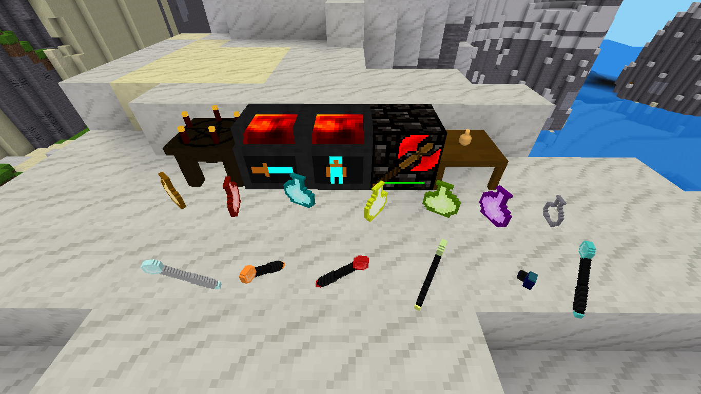
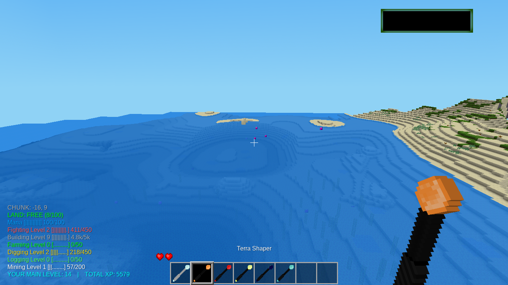
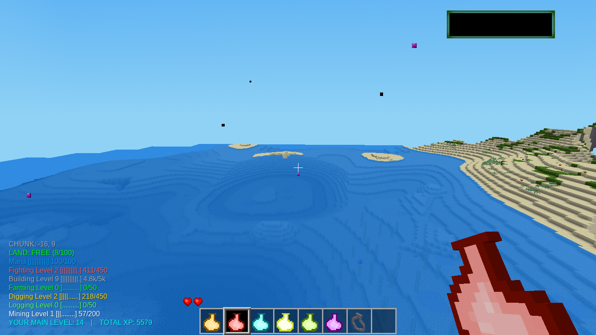

My Magic is all about magic.
You will find gems and orbs while mining. These are use to enchant tools, armor and craft some special blocks. You will find 4 different color gems and orbs. Orange, Green, Blue and Red. You will need to go mining to get the orbs and gems you will need.
Enchantment Table
You will need to craft an enchanting table.
t- default:torch
w - default:wood
s - default:stick
r - mymagic:orb_red
n - nothing
t/r/t
w/w/w
s/n/s
Once you craft the table you can enchant your tools and armor. You can enchant shovels, axes, swords and picks. You can also enchant diamond armor. You have to follow this color order to enchant. First - Orange, Second - Green, Third - Blue and Forth - Red.
In the enchanting table put your tool or armor into the table and add 4 orbs. Click enchant and your done. Repeat for each of the colors.
Tool Recharging
The tool regarging station repairs tools. They are repaired with orbs. the level of orb is what detirmines the amount of repair. You will need to make a recharging staion to use it. Here is how.
s - default:steel_ingot
o - mymagic:orb_orange
b - default:brick
s/o/s
s/b/s
s/s/s
Sword Forge
You can not craft a sword like you used to. You need the forge to do this. First you need a forge.
s - default:steel_ingot
c - default:coalblock
b - default:brick
s/c/s
s/b/s
s/s/s
After you craft the forge then open it up. On the left you can make the blade and right the handle. The left takes 3 of the material. The default types work. The right takes 3 sticks. For each click on make and you get a blade and handle. Click on make at the bottom and you get a sword.
After making a sword you can enchant it in the enchanting table.
There are also energy cubes. These are nodes that are simple nodes that are animated. You are able to walk through them. They are not overly special. Here is how to make them.
O - orb (you must use the same color orb for each block but all 4 colors supported)
o/o
o/o
Tool Blocks
These are blocks that are meant for adenture type maps. They give a tool on destruct. They are not useful on survival maps. There is no craft for them.
Blocks for specific tools
These are blocks that can only be destroyed with certain tools. These are also only meantforadventur type maps. These blocks are for axe or pick of a certain color level. Nothing can destroy it but the right tool. There is no craft for this item.
Gem Blocks
There are 2 main types right now. One spawns ladders 5 nodes high or below and the other spawns teleport holes 5 above and below. Orange is ladder down Green is ladder up Blue is teleport up Red is teleport down
The Dungeon Door is a door that is 2 nodes wide and made of stone brick. The only way to open the door is to punch while holding an orb. The color does not matter.
To make you need stonebrick aroung the outside of the crafting grid and an orange orb in the center.



- Luanti Forum Link - My Magic - not on forum yet
- Github Link - Veiw Code
- Direct Download - mymagic.zip
- ContentDB - My Magic